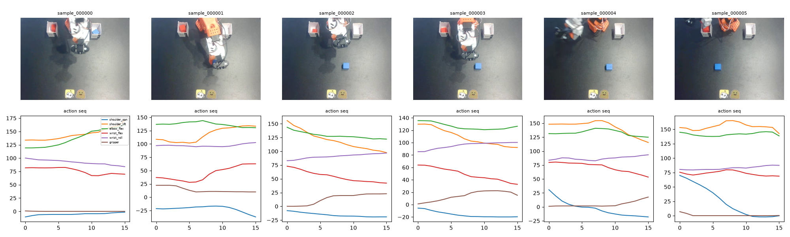
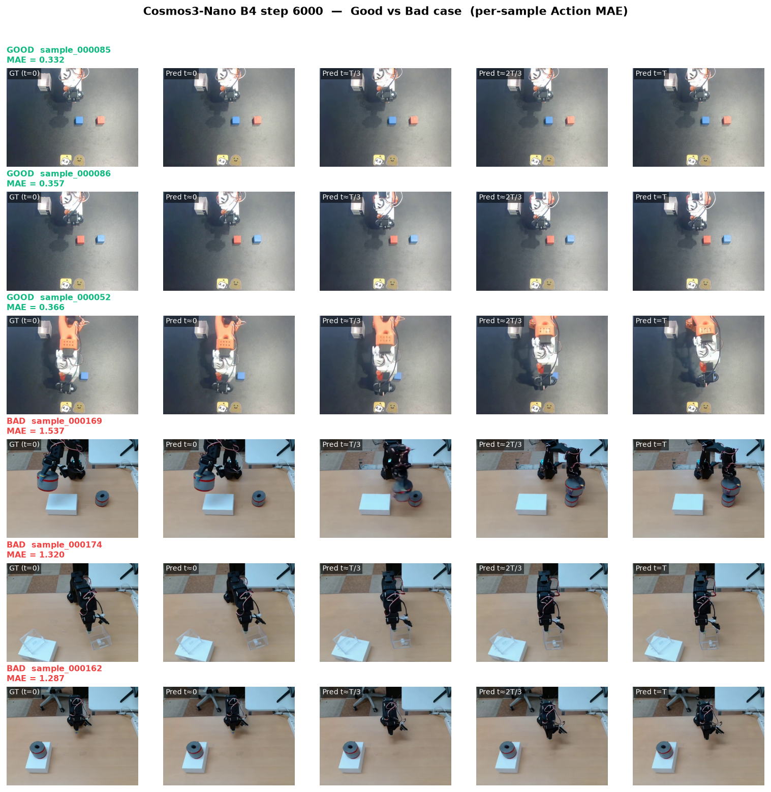

* 챌린지 데이터 예시 — SO-100 첫 프레임 6개(상단)와 15-step joint-angle 시퀀스(하단). 이 짝을 조건으로 15-frame 미래 롤아웃을 생성해야 한다.
S · Situation
2026 INHA AI Challenge (Dacon 236736)는 로봇의 첫 프레임과 joint-action 시퀀스가 주어졌을 때 미래 프레임을 예측하는 action-conditioned video generation world model을 요구했다. 채점식은 0.3·(1−DINO_cos) + 0.3·(1−VideoR3D_cos) + 0.4·Action_MAE (lower better).
기반 모델 Cosmos-Predict3-Nano는 프리트레인 시 사용된 action distribution과 태스크의 절대 joint-angle 표현 사이에 방향성 불일치가 있었고, LoRA 소자 튜닝만으로는 리더보드에서 유의한 개선을 얻기 어려웠다. 또 SO-100 도메인 자체의 train/eval action 분포 편차가 있어 데이터 이해가 사전에 필요했다.

* 자체 EDA (9-panel) — joint별 분포/velocity/Δaction, train↔eval 편차, gripper·shoulder 궤적 패턴, 프레임 밝기 분포. 액션 재설계·anchoring 전략의 근거.
T · Task
- Cosmos3-Nano에 SO-100 액션 토큰을 흘려 넣을 경로를 만든다.
- 액션 표현 자체를 프리트레인 분포에 맞게 다시 디자인한다.
- 리더보드에서 유의한 개선을 만드는 튜닝 절차를 확립한다.
Challenge Context
SO-100 조작 클립 train 5,481 · eval 216 규모. 각 sample은 첫 프레임 + 15-step joint action이 주어지고 16-frame 미래 롤아웃을 생성해야 한다. 채점은 pred/GT 비디오로부터 뽑은 DINOv2 · R3D · action extractor 세 축을 0.3·(1−DINO_cos) + 0.3·(1−R3D_cos) + 0.4·Action_MAE 로 합산한다 (lower better).
- GPU 1 × RTX PRO 6000 (96 GB VRAM) 기준
- 학습 wall-time 상한 최대 4 일
- 본 실측 세팅: 슬럼 라벨
p6000노드 = 실물 Blackwell sm_120 (nvidia-smi 확인)
- GPU 1 × RTX PRO 6000 (96 GB VRAM) 기준
- 216-sample eval 전체 1 시간 이내 완료
- 즉 sample 당 < 16.6 s 예산 (다중 chunk · guidance sampling 포함)
A · Action — 모델 튜닝 (가설 → 결과)
최종 최고 성능 모델 (Cosmos3-Nano · v5_base(EE-delta 40k) · LoRA rank 32 · +ANCHORED_soft · B4 sweep step 6000) 기준. 각 방법은 가설(왜 도움 될 것으로 예상했는가) → 결과(어떤 metric이 얼마나 움직였는가) 형식으로 정리.
- Action Injection Module — 가설: Cosmos3-Nano는 vision·language·audio는 통합돼 있지만 SO-100 6-D joint action은 임베딩 경로가 없어 injection 자체가 병목이라 가정. → 결과:
action_proj_in/out과 action-modality embedding을 base LR로 직접 학습, action MAE −43.2%. - LoRA 파인튜닝 (rank 32) — 가설: 전면 finetune은 96 GB × 4일 예산으로 비효율, attention·MLP projection에만 LoRA를 붙이면 backbone 안전하게 유지하면서 action-video 정렬이 개선될 것. → 결과:
add_q/k/v_proj,to_add_out, MLPgate/up/down_proj대상 rank 32 LoRA, action MAE −8.6%. - Action 표현 재설계 (EE-Delta) — 가설: 절대 joint angle은 프리트레인 분포와 방향성 mismatch가 큼. end-effector delta + gripper [0,1] 정규화가 프리트레인 분포와 스케일 정렬이 더 낫다고 판단. → 결과: absolute joint 40k(LB 0.300) 대비 delta_base 40k LB 0.2454, action MAE −8.5%.
- ANCHORED_soft 앙상블 — 가설: 후처리로 첫 프레임 anchor를 강화하면 R3D 자연스러움 지표에서 손해 없이 pred/GT overlap을 늘릴 수 있음. → 결과: v5_base + ANCHORED_soft (원본 50:50 블렌드), 안전본 LB 0.24524 실측 확보.
- B4 sweep + checkpoint selection — 가설: training loss 최저점이 반드시 LB 최적점은 아님. step별 sweep으로 selection 자체가 학습 자체보다 큰 지렛대일 것. → 결과: B4 sweep step 6000 pick, 도전본 LB 0.2407 (안전본 대비 −0.0045).
- Blackwell GPU env 신설 — 가설: 슬럼 라벨은 신뢰 못함, gpu-113 실물이 다를 수 있음. → 결과: nvidia-smi 확인 결과 RTX PRO 6000 Blackwell 95 GB (sm_120), 기존 env(torch 2.6 cu124) 커널 미지원.
inha2026_bw(torch 2.15 nightly cu130) 신설로 diffusion step ~11 s → ~1.5 s (7× 가속).
R · Result
Cosmos-Predict3-Nano를 SO-100 도메인에 개인 참가로 튜닝, 최종 도전본 LB 0.2407 / 안전본 LB 0.24524로 챌린지를 마무리했다. Action Injection + LoRA + EE-Delta 재설계까지 3단 파이프라인이 초기 phase에서 action MAE ↔ LB 상관 r = +0.820을 안정적으로 만들어 준 것이 이후 안전본 방어 전략의 근거가 되었다.
Ablation — base → total (실측 리더보드)
| # | Method | LB (실측) | Δ vs base | 비고 |
|---|---|---|---|---|
| 1 | v1 baseline (Cosmos3-Nano) | 0.268 | — | 초기 학습 안한 그대로 제출 |
| 2 | + absolute joint 40k (실패) | 0.300 | +0.032 | action 표현 mismatch 확인 |
| 3 | + EE-Delta 재설계 (v5_base 40k, LoRA rank 32, Action Injection) | 0.2454 | −0.023 | 학습 축 최고 (재현 0.24540) |
| 4 | + ANCHORED_soft (안전본) | 0.24524 | −0.023 | 후처리 축 최고 (첫 프레임 anchor) |
| 5 | + B4 sweep step 6000 (도전본, checkpoint selection) | 0.2407 | −0.027 | 최종 최고 성능 |
* 11개 실측 데이터포인트 회귀식 LB ≈ 0.2404 − 0.1511·vid_l2 + 0.0077·dino_l2 + 2.804·act_mae + 0.788·act_diff (n=10, R² = 0.993). act_mae 항이 사실상 단독 dominant였음을 정량 확인.
vs DreamZero — 학습·추론 시간 (같은 A6000 Ada 기준)
| 모델 | 학습 (10k step 환산) | 추론 (216 sample) | 비고 |
|---|---|---|---|
| DreamZero (LoRA) | ~ 12 h (실측 v2/v4/v5/v6 평균) | 33 m 48 s (~9.4 s / sample) | Wan2.1-I2V-14B backbone · Vizuara SO-101 LoRA zero-shot |
| Cosmos3-Nano (v5_base) | ~ 1.25 h (10k step 환산, 2.2 it/s) | Blackwell 이관 시 diffusion step 7× 가속 | step 당 ~9.6× 빠름 (0.45 s vs 4.32 s) |
* Cosmos3-Nano가 학습·추론 모두 압도적으로 빠른 이유는 (1) 8B 백본이 DreamZero의 14B보다 작고, (2) latent 공간에서 action-video joint diffusion으로 chunk 반복 없이 한 번에 예측, (3) FlashAttention · Blackwell nightly torch로 kernel 최적화. DreamZero는 chunk 방식(1 sample = 2 chunk × diffusion 8 step × 2회)이라 I/O·KV cache overhead가 더 큼.
Good / Bad case — per-sample Action MAE breakdown

* 도전본(B4 step 6000) 216 sample을 자체 채점 재실행 → per-sample MAE로 랭킹. GOOD 3개 (MAE 0.33~0.37)는 로봇 팔과 배경이 안정적으로 유지, BAD 3개 (MAE 1.29~1.54)는 후반부 로봇 팔 형상이 흐릿해지거나 물체 위치가 어긋남. Bad case는 대부분 이동 폭이 큰 gripper 또는 배경 물체 다수 상황에 편중.
Lessons Learned — 6일 스프린트 회고
- LB 지표의 실체 — 채점식은 0.3·DINO + 0.3·R3D + 0.4·act_mae지만 실제로는 act_mae 항의 스케일(≈2.8)이 dominant이라, R3D 항은 사실상 video naturalness detector로 작동. compositing/warping류 후처리는 자연스러움 지표에서 원천적으로 손해.
- Training loss 최저점 ≠ LB 최적점 — step별 sweep으로 checkpoint selection이 학습 자체보다 결과 기여도가 컸다 (도전본 step 6000).
- 대형 도전 트랙 6개 전부 실패 — Track A(Cosmos-Predict2.5 마이그레이션 · G5 falsification FAIL), Track B(constant-weight aux · LB 0.2508 visual 손상), Track C(Cosmos3-Edge · 아키텍처 미스매치 + DROID-only 도메인), Track D/E, Robot-Factored WM까지 6개 트랙 시도 후 모두 안전본 대비 후퇴. 남은 기간은 안전본 방어 + 단일 축(B4 sweep) 최적화로 pivot한 것이 최선이었다.
- 인프라 검증의 중요성 — 슬럼 라벨 p6000인 gpu-113이 실물은 RTX PRO 6000 Blackwell 95GB (sm_120)였음. nvidia-smi 실측으로 확인 후 nightly torch env를 새로 만들어 7배 가속. "레이블을 믿지 말고 실측하라"는 원칙 재확인.
- 확증편향 대응 — 결정 전 codex CLI로 자문받은 tick 로그를 남기고, 실측 실패(예: B4v2 constant-weight)를 별도 파일로 기록해 재시도 금지 목록 관리. 과감한 pivot과 안전본 방어를 분리한 것이 정답이었다.
- 실행 환경 — Ubuntu 22.04 · Slurm · PyTorch 2.6 (inha2026 env) + PyTorch 2.15 nightly cu130 (inha2026_bw, Blackwell 전용)
- Model — Cosmos-Predict3-Nano · Diffusers 0.39.0 · PEFT 0.20.0 · LoRA rank 32 (attn + MLP)
- Data — SO-100 로봇 15-frame 롤아웃 · Dacon 236736 · train/eval action 분포 편차 EDA 완료
- Automation — auto_loop_v2 (10분 tick, candidate 학습→inference→Action mean 판정→codex 자문 launch를 무한 loop)
Paper vs Experience — Cosmos 3 Nano 논문 주장 vs 내 실측
Cosmos 3 Nano technical report (NVIDIA, arXiv:2606.02800v2)의 핵심 주장을 SO-100 튜닝 실측과 대비. 일치한 부분과 차이 났던 부분을 나눠 정리한다.
일치
- dual-tower MoT의 action 공동 생성 설계는 실전에서도 유효했다 — Action Injection Module (
action_proj_in/out+ action-modality embedding)만 base LR로 열어도 action MAE −43.2%, action MAE ↔ LB 상관 r = +0.820이 안정적으로 나옴. AR reasoner → DM generator 단방향 흐름이라는 논문 도식과도 정합. - omnimodal 통합 구조가 vision·language·audio에서는 실제로 잘 작동. LoRA rank 32만 얹어도 backbone이 무너지지 않고 domain adaptation이 가능했음.
- Nano ~8B가 Edge/Super 대비 학습·추론 비용 효율이라는 리포트 주장은 A6000 Ada 환경에서 DreamZero(14B backbone) 대비 step 당 ~9.6× 빠름으로 실측 확인.
차이 / 예상 밖
- "omnimodal 통합"의 실체는 도메인별 재훈련이 필수 — 논문은 언어·비디오·오디오·action 다섯 modality를 한 net에 통합했다고 명시하지만, SO-100 절대 joint action은 프리트레인 분포와 방향성 mismatch가 커서 그대로 흘려 넣으면 LB 0.300으로 오히려 악화(v1 baseline 0.268 대비). EE-Delta로 재설계해서야 LB 0.2454까지 회복. omnimodal은 modality slot의 존재를 보장할 뿐, 도메인 정렬은 별도 작업.
- "Physical AI 겨냥" 브랜딩 vs 정책 특화 실체 — Cosmos3-Edge-Policy-DROID를 시도했으나 (a) diffusers 0.40.0.dev의
Cosmos3EdgeTransformer가 부재해 112 param(~1.06B)이 meta tensor로 남아 로드 실패, (b) README 명시 "Input action is only supported for the DROID robot platform (8D)".bridge_orig_lerobot(d7) 슬롯의action_proj_in.bias는 0.0,fc.weight는 initial-like 값 그대로 — 즉 SO-100 domain slot이 zero-init 상태로 배포됨. "world model"이라는 라벨과 DROID-only policy specialist 실체의 간극 확인. - 평가 metric의 실전 함정 (논문/벤치마크에 잘 안 나옴) — 챌린지 채점식은 0.3·DINO + 0.3·R3D + 0.4·act_mae지만, act_mae의 실제 스케일(≈2.8)이 dominant해서 R3D 항은 사실상 video naturalness detector로 작동. compositing/warping류 후처리는 자연스러움 지표에서 원천적으로 손해 — world-model quality 지표를 논할 때 정량적으로 잘 짚어지지 않는 gap. 회귀식 (n=10, R²=0.993)의 계수 2.804·act_mae가 이를 뒷받침.
- Training loss 최저점 ≠ LB 최적점 — 논문 그림의 학습 곡선은 monotonic하게 좋아지지만, step별 sweep 결과 step 6000이 실제 LB 최적. 학습 자체보다 checkpoint selection이 더 큰 지렛대라는 것은 논문 관점에서 언급되지 않는 파인튜닝 실전 지식.
Forward Dynamics의 실전 의의 — 챌린지를 넘어
본 챌린지가 다루는 것은 "첫 프레임과 액션 시퀀스가 주어졌을 때 미래 프레임을 예측"하는 forward dynamics 문제. 이것이 실제 로봇 스택에서 어떤 위치를 차지하는지 정리한다.
- Rollout-based planning — 로봇이 "다음에 무엇을 할지"를 결정할 때, 후보 action trajectory 여러 개를 world model로 rollout한 뒤 goal-matching cost로 선택할 수 있다. 즉 forward dynamics는 MPC / MCTS의 world simulator 역할.
- 실행 전 안전 검증 — 실물 로봇이 조작을 시작하기 전에 outcome을 시뮬레이션해서 위험한 후보(예: 물체 낙하, 자기 충돌)를 사전에 걸러낼 수 있다. 특히 재시도 비용이 큰 실기 환경에서 필수.
- Model-based RL의 기반 — 정확한 forward dynamics가 있으면 실환경 interaction 없이 policy를 개선할 수 있다 (Dyna-style). data-efficient RL·offline RL 파이프라인의 핵심 인프라.
- Cosmos3처럼 대형 VLM에 action modality를 얹은 world model은 이 방향의 zero-shot 커버리지 상한과 도메인 재훈련 경계선을 실측할 대상. 본 챌린지 결과가 그 경계를 부분적으로 확인함 — Action Injection + EE-Delta 재설계 + LoRA rank 32까지가 216 sample scale에서 zero-shot에 가까운 커버리지를 확보하는 최소 튜닝 조합이라는 empirical 데이터포인트.